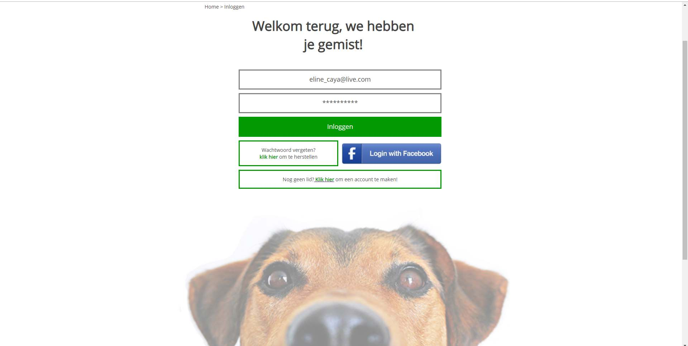

The assignment was to design a website for a classmate based on his or her problem. The design of the website had to be developed in AdobeXD and meet the 8 golden rules of Ben Shneiderman. This design had to be converted to HTML and CSS including the use of CSS grid or flexbox.
The solution to my classmate's problem has become a website where people can search for a person to walk their dog. This was the first website that I designed and built myself in AdobeXD and HTML/CSS. My main source of inspiration for the design was the website: hondjeuitlaten.nl I have analyzed this website completely and incorporated certain elements into this design. There is also a lot of use of visuals as opposed to text. The reason for this is to evoke a certain feeling in the user and to make them enthusiastic about dogs and walking them. Furthermore, I have applied the 8 golden rules of Ben Shneiderman as much as possible.